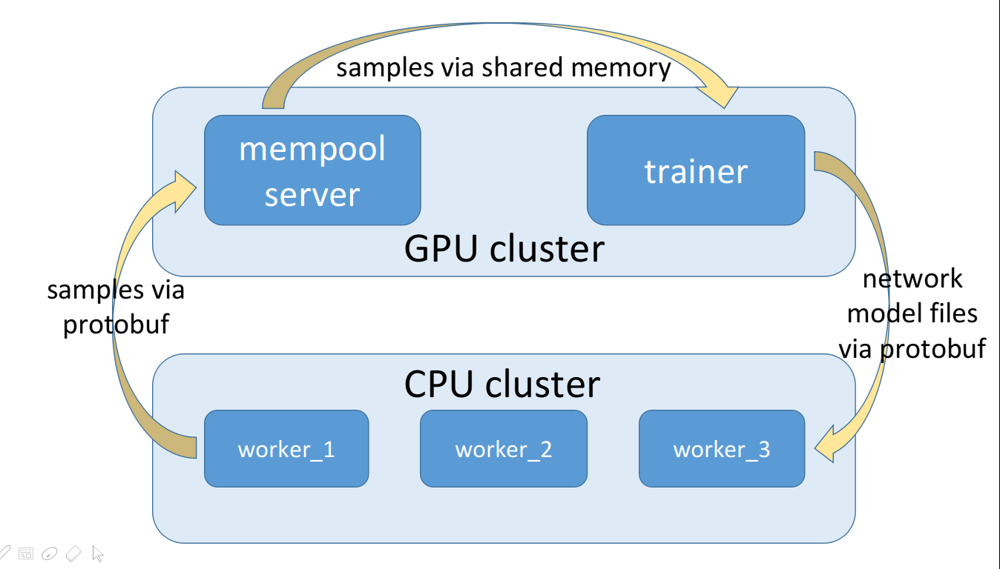
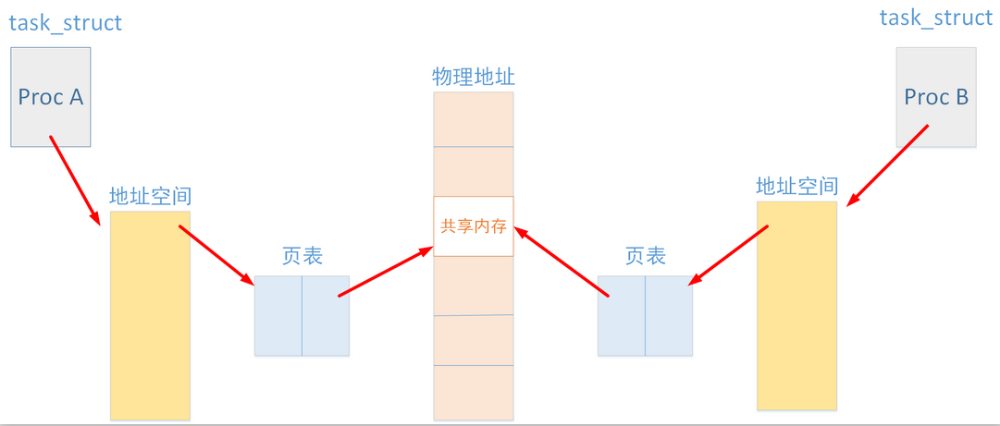

一个基于Web Server的的分布式训练架构，开发中，代码见 webserver-based-parallel-rl-training
1. TODO
- [x] 写数据用
atomic_uint64来取样本序列下标，从而保证写事务的一致性 - [ ] 数据读取速度太慢，关键的问题在于能不能避免读数据的时候发request
2. Architecture Overview
该架构由三个结构组成
- worker $\times$ N: maintain the policy network and the target-Q network, use the models to roll out samples
- mempool server $\times$ N: save the samples from workers to the replay memory buffer, deliver samples to the trainer in demand
- trainer: read samples from mempool server and train models, use soft update to maintain the target networks, send target network models to workers frequently to replace the olds
三个server之间互相沟通的关系如下图

3. Mempool Server
mempool应该是这个架构中技术最难的部分，主要存在两个问题
- 由上图可以明显看出mempool server必须要异步地处理worker发来的样本，同时还要将样本发送给trainer，这是一个典型的读者-写者问题，写者是worker，读者是trainer，同一个mempool server可以有多个worker发样本，这意味着无锁化会很难搞
- 样本从worker到trainer的传输效率问题
- 首先mempool server作为一个中间介质的存在是必要的，不然没有办法做到让模型训练时从一个样本集合中均匀地采样batch
- 样本量比较大的时候，考虑用pb编码传输效率比json更快，可以让worker直接把样本编码成pb发送，问题在于pb的反序列化是CPU密集型的，所以反序列化肯定不能放在trainer里面做，但如果在mempool server中反序列化再通过http发送未经压缩的样本，那么worker用pb编码样本的意义就不存在了，最终性能的瓶颈会受限于mempool server到trainer的传输效率，所以也不能用http发送样本，这个意义上讲mempool与Trainer之间通过shared memory传数据是最优选择
3.1. 读者-写者问题
考虑到trainer的读取请求应该会比worker的写入请求更多，本repo采用写者优先的策略，伪代码如下
1 | class ReplayMemory(object): |
是否存在无锁化方案仍在调研中。。。
3.2. 骚操作之一：在Flask中用protobuf
安装过程比较简单，按照官方给的文档来就不会踩坑，首先到 https://github.com/protocolbuffers/protobuf/releases 去下载需要用到的语言对应的源码压缩包，下载好以后需要先编译cpp的版本才能编译其他语言，按照 https://github.com/protocolbuffers/protobuf/tree/master/src 页面的readme文档编译安装即可
cpp版本编译完成后，Python版本编译方法如下1
2
3
4
5
6python setup.py build
python setup.py install
python setup.py test
# test cases (if neccesary)
# python
# >>> import google.protobuf
3.3. 骚操作之二：将numpy array的内存空间映射到shared memory
经验教训写在最前面：以后用Linux系统层的接口一定要认真看官方的mannual，网上的大部分blog都是复制来复制去，一个
man xxx比十篇blog都管用
本项目中对shared memory的处理方式是：在Python中，用numpy.ndarray的格式开一个足够放下一整个batch数据的buffer，将numpy的指针传入cpp中，cpp将numpy.ndarray内存空间映射为shared memory，然后Python就可以直接通过操作numpy格式的array来操作shared memory了

shared memory是Linux系统接口提供的功能，可以让不同进程进行高效的数据交互，其原理本质是页表映射：操作系统首先开辟一片物理空间作为进程间共享的shared memory，然后在两个进程内的一片连续的空间内，将逻辑地址通过页表映射到一片相同的物理地址
1 | # 查看系统中的共享内存 |
shmget，在物理内存空间中创建共享内存，成功返回shmid，错误返回-11
int shmget(key_t key, size_t size, int shmflg);
key：大于零的整数即可，一般可以用ftok来生成，ftok中的参数可以随便定，系统会保证给你返回一个不冲突的shmid；本项目中考虑到从Python向cpp传ftok的参数字符串很麻烦，选择直接手动指定size：需要注意这个函数中会将size变量自动round up，推荐直接传getpagesize()整数倍大小的size值shmflg：IPC_CREAT就代表创建，可以通过或操作符设置权限，比如本项目中用到的是IPC_CREATE|0666，代表所有用户都有读写权限；如果是想找到一个已经存在的共享内存段，该参数直接传0即可；其他一些flag可以直接用man shmget查看
shmat，将进程内的一篇连续空间使用页表映射到物理内存中的共享内存，成功返回进程内被关联到的共享内存逻辑地址指针，错误返回-11
void *shmat(int shmid, const void *shmaddr, int shmflg);
shmid：shmget的返回值，唯一标定一块具体的shared memory物理空间shmaddr：这个参数名堂不小，网上几乎所有的blog都会告诉你这个参数直接填0，这样操作系统就会自己去找一篇合适的内存空间，但这显然不符合我们的需求，我们想要的是让操作系统将shared memory映射到指定的numpy.ndarray空间中。如果该参数非空，那么系统要求shmaddr满足以下二者之一shmaddr必须得是页对齐的，然而Python中开numpy的array才不会管你有没有页对齐，我搜了好半天的api也没搜到有什么办法能开出来页对齐的numpy.ndarray，所以此方案passshmaddr没有页对齐的情况下，shmflg必须指定SHM_RND，指定之后该函数会自动将shmaddr的地址round down到页对齐的地址去——这个round down真的是很坑，无论是栈空间上的数组还是堆空间开辟的内存，用户肯定都是用头指针进行操作的，如果你传进去numpy.ndarray的头指针，那么有可能round down的过程中就会访问到越界的内存——目前想到的最优解决方案是传numpy.ndarray的头指针加上getpagesize()，这样向下做页对齐的时候就肯定不会越界
shmflg：除了上面说的SHM_RND以外，还有一个网上 所有blog都忽视的一点：如果用户通过shmaddr传进去了一个已经被页表映射过的内存空间，那么这里必须指定SHM_REMAP，这个flag会强制操作系统对shmaddr对应的内存进行重新映射（如果没有这个标志的话会报错，errno=22，打开shm的头文件你会发现错误码里甚至没有22，可能需要查很久才会发现问题所在）
TODO: 加了SHM_REMAP之后，对shmaddr对应的内存地址做remap之后会不会原来的内存空间就泄露了？
目前还没有结论，直觉上来讲是很有可能的，因为一般应用层分配堆空间内存都是用
malloc之类的，而页表内存映射是更底层的东西。个人认为即使这里出现内存泄漏也是可以接受的，因为它只发生在ReplayMemory的构造函数中，也就是说整个程序运行时只会泄露一次，不会随着程序运行越漏越多
相比之下，释放shm就比较简单了，直接放代码1
2
3
4
5
6
7
8
9
10
11
12void close_shm(float* shmbuf, int* addinfo) {
int shmid = addinfo[0];
int offset = addinfo[1];
if (shmdt((char*)shmbuf + offset) == -1) {
perror("shmdt failed\n");
exit(-1);
}
if (shmctl(shmid, IPC_RMID, 0) == -1) {
perror("remove shm error\n");
exit(-1);
}
}
3.4. numpy与cpp接口的一个小细节
已经不是第一次踩这个坑了：numpy.ndarray在内存空间中的存储可能不是连续的，如果不加处理直接将不连续的numpy指针传进cpp，处理的时候就会出莫名其妙的segmentation fault
解决方案：1
2
3
4
5
6
7class ReplayMemory(object):
def __init__(self):
# ...
self.shmbuf = np.zeros((G.MAX_SHM_BYTES_ROUNDED // 4), dtype=np.float32)
if not self.shmbuf.flags['C_CONTIGUOUS']:
self.shmbuf = np.ascontiguousarray(self.shmbuf, dtype=np.float32)
# ...
4. Workers
Workers的主要任务包括以下几个内容
- 维持trainer发来的网络模型，并定期更新，其中定期更新可以考虑两种思路
- 指定固定的时长，每次发送完一整个episode就进行时间检查，超过指定时间不管模型文件是否更新都reload模型文件
- 每次发送完一整个episode都检查一遍文件的md5sum，从而判断模型文件是否已经更新，若已被更新则马上reload模型文件
- 采样数据样本，计算
reward_sum封装成pb格式发送，这里计算reward_sum也是要分情况讨论- 对于Q-Learning类的算法，$ R_t = r_t + \gamma * V(s_{t+1}) $，近似等价于GAE中$\lambda=0$的情况
- 对于policy gradient类算法，如PPO，最好是用GAE计算
- 冷启动：动作可以直接通过
env.action_space.sample()采样得到，这种情况reward_sum可以通过backtracking反加得到，等价于GAE中$\lambda=1$
Worker最大的问题在于需要从trainer下载新的模型文件，本项目中这部分功能由mempool server代替trainer实现，本项目的代码中对这部分做了两个方面的优化：
第一，当模型文件比较大的时候，对worker而言，使用requests进行读取，需要一次性将大文件load到内存中，然后再写入硬盘文件，torch导入时会再次重新从硬盘上读取模型文件。在内存上一次性开辟等同于文件大小的buffer是巨大的浪费，且中间多了一次经过磁盘的操作，如果模型文件比较大，这部分的性能消耗也会比较严重
当然requests早就考虑到了大文件下载的问题，解决方案是在参数列表中加入stream=True1
2
3
4
5
6ret = requests.get(url + '/sac_critic_target.pth', stream=True)
if ret.status_code == 200:
with open(G.CRITIC_FILENAME, 'wb') as fd:
for chunk in ret.iter_content(chunk_size=128):
if chunk:
fd.write(chunk)
第二，下载文件是IO密集型的作业，而worker的采样是CPU密集型的作业，因此可以将文件下载封装成单独的一个线程1
2
3
4
5
6
7
8
9
10
11
12
13class DownloadThread(threading.Thread):
flag_success = False
# ...
def run(self):
# download files...
self.flag_success = True
class Worker(object):
# ...
def check_reload(self):
download_thread = DownloadThread()
download_thread.start()
return download_thread.flag_success
5. Trainer
5.1. grequests
由于架构中存在多个mempool server，模型训练的过程中，我们希望trainer可以从每个mempool server中请求数据，这样实际上模型训练时的batch size就是每个mempool server中设定的batch size大小之和，较大的batch size可以很好地降低policy gradient的方差
那么如何实现trainer从每个mempool中请求数据的过程呢？首先可以确定的是，在一个for循环中去依次请求每个mempool server是非常不scalable的做法，如果有一个mempool server返回延时较高，那么整体请求的响应速度就会被严重拖慢。稍微进阶一点的思路是开线程并行，但众所周知Python有个坑爹的GIL，且线程的代价也比较高，所以考虑使用grequests库来满足我们的要求
用法比较简单，放代码1
2
3
4# use grequests to support large number of mempool server requests
req_list = [grequests.get(url) for url in self.remote_url_list]
ret_list = grequests.map(req_list)
# ret_list里面每个元素都是一个requests库中定义的HttpResponse类型
5.2. send_model
send_model的功能，是让Trainer每当更新后的模型落盘后，都将模型文件打包发送给workers
这部分的实现策略思前想后比较纠结，一开始打算用pb发文件，后来想想为了做这件事还得在trainer这里单独开一个http server，颇有杀鸡用牛刀之感；后来还想在Trainer进程中fork出来一个完全异步的Python子进程，让子进程来管理发送模型文件，但是这样子进程做的事情和父进程就没有任何关联了，还不如直接单开进程
思前想后，既然mempool server和trainer是在同一台物理机器上运行的进程，干脆让mempool server越俎代庖去trainer那边读模型文件，然后worker这边在单开一个进程定期用requests去下载模型就好了
6. logging
本项目中所有模块的日志管理都用到了Python中的logging模块，用法非常简单，代码开头注册logger即可，这里记录下本项目采用的log格式
1 | logfmt = '[%(levelname)s][%(asctime)s][%(filename)s][%(funcName)s][%(lineno)d] %(message)s' |
7. Potential references
- Distributed training of RL implemented in Tencent AILab papers
- Distributed replay memory for RL training